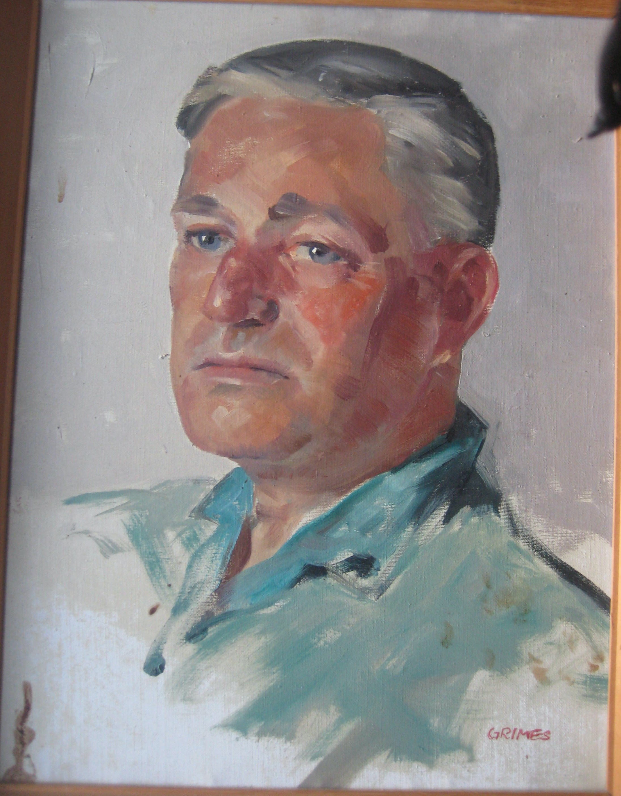
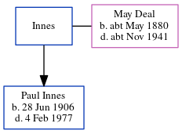

Paul Joseph Anthony Innes 1906 - 1977
[ Home ] | [ Calendar ] | [ Surnames Index ] | [ Errors ] | [ Family History ]The child of Innes and May Deal, Paul Innes, the second cousin once-removed on the father's side of Nigel Horne, was born on 28 Jun 19061 and married Alice Traill (with whom he had 1 child, Jocasta Claire Traill) in Bedford, Bedfordshire, England around Aug 19333. In 1977, he was living at Andrew's Farm Lane, Dunmow, Essex, England.
He died on 4 Feb 1977 in Uttlesford, Essex, England1,2.
Parents
- May was born c. May 1880
Children
- Jocasta Claire Traill was born on 21 May 1934
Citations
- England & Wales deaths 1837-2007 - Findmypast
- England & Wales Government Probate Death Index 1858-2019 - Findmypast
- England & Wales Marriages 1837-2005 - Findmypast
Media
Paul Innes - Portrait

England & Wales marriages 1837-2005 - BMD/M/1933/3/AZ/000748/098
England & Wales deaths 1837-2007 - BMD/D/1977/1/AZ/000603/109
England & Wales Government Probate Death Index 1858-2019 - GBOR/GOVPROBATE/C/1977-1977/00110984
Family Tree
Map
Generated by ged2site. Last updated on Jul 3, 2024
Known Issues
Date of birth is known, but not place
Residence record for 1977 contains no citation
Listed in the residence for 1977, but spouse Alice Traill is not
No records of living with anyone